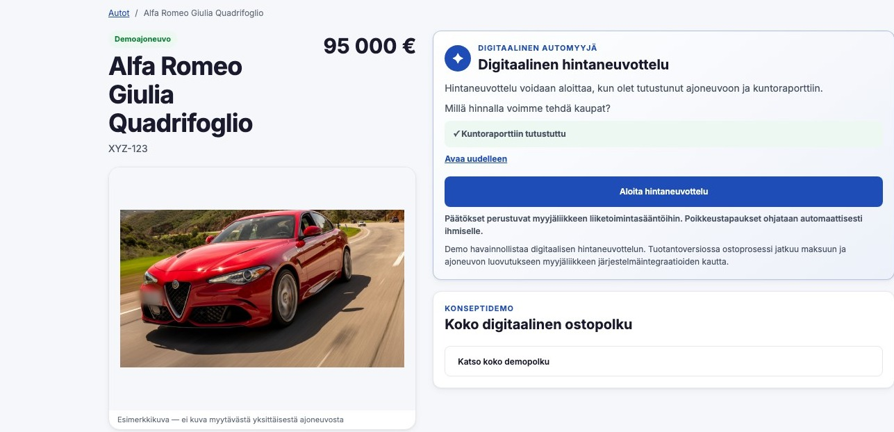

Kopilotti Sales
Digitaalinen automyyjä, joka neuvottelee hinnasta 24/7
Kopilotti Sales antaa asiakkaalle vastauksen silloin, kun ostohalu on korkeimmillaan. Autoliike määrittää neuvottelun rajat, ja järjestelmä toimii vain niiden sisällä.
Demo havainnollistaa käyttöliittymää ja neuvotteluprosessia esimerkkiajoneuvolla — ei käsittele oikeita kaupallisia päätöksiä tai maksuja.

Haaste
Asiakas ei aina odota aamuun
- Asiakkaat selaavat autoja myös iltaisin, öisin ja viikonloppuisin.
- Kiinnostus voi olla korkeimmillaan juuri sillä hetkellä, kun myyjä tai vaihtoautopäällikkö ei ole tavoitettavissa.
- Hinnasta keskusteleminen pysähtyy helposti manuaaliseen hyväksyntään.
- Viive voi katkaista ostoprosessin.
- Kopilotti Sales antaa asiakkaalle heti hallitun seuraavan vastauksen.
Tarkoitus on lyhentää aikaa asiakkaan tarjouksesta autoliikkeen vastaukseen.
Prosessi
Miten se toimii
-
Asiakas valitsee auton
Kopilotti Sales avautuu autokohtaisesti verkkosivulla tai nykyisen myyntipolun yhteydessä.
-
Asiakas aloittaa hintakeskustelun
Digitaalinen automyyjä käy asiakkaan kanssa luonnollisen keskustelun ja kerää tarjouksen.
-
Järjestelmä tarkistaa autoliikkeen määrittämät rajat
Liiketoimintakriittinen päätös tehdään palvelinpuolella. Hintarajoja ei säilytetä selaimessa eikä anneta kielimallin päätettäväksi.
-
Asiakas saa vastauksen
Lopputulos voi olla hyväksytty tarjous, hallittu vastatarjous, ohjaus ihmismyyjälle tai lisätietojen pyytäminen.
Erottuvuus
Mikä erottaa Kopilotti Salesin chatbotista
Tavallinen chatbot
- Vastaa yleisiin kysymyksiin
- Ohjaa asiakaspalveluun
- Hakee tietoa tietopankista
- Ei vastaa hinnan päätöslogiikasta
Kopilotti Sales
- Toimii autokohtaisessa ostotilanteessa
- Käy rajattua hintaneuvottelua
- Käyttää autoliikkeen määrittämiä liiketoimintarajoja
- Voi jatkaa keskustelua myös myyntihenkilöstön ollessa poissa
- Siirtää poikkeustilanteet ihmiselle
Kopilotti Salesin ei tarvitse korvata autoliikkeen nykyistä chat-ratkaisua — se hoitaa yhden rajatun, kaupallisesti kriittisen tilanteen.
Arkkitehtuuri
Ei uutta autokaupan perusjärjestelmää
Kopilotti Sales voidaan toteuttaa nykyisen ympäristön rinnalle, ei sen tilalle.
- Autoliikkeen verkkosivusto
- Kopilotti Sales -käyttöliittymä
- Kopilotti Sales API
- Autoliikkeen järjestelmät
Pilotissa valitaan tarvittavat integraatiot autoliikkeen nykyisen ympäristön perusteella.
Hallinta
Autoliike määrittää neuvottelun rajat. Kopilotti Sales toimii vain niiden sisällä.
Autoliike voi määrittää neuvottelun ehdot esimerkiksi:
- Autokohtaisesti
- Ajoneuvoryhmittäin
- Hintaluokittain
- Kampanjan perusteella
- Varastotilanteen perusteella
- Manuaalisen hyväksynnän vaativiksi
Käytettävä malli sovitaan pilotissa autoliikkeen oman hinnoitteluprosessin mukaan.
Turvallisuus ja hallinta
Keskustelu voi olla älykäs. Hintapäätös ei saa olla arvaus.
- Kielimalli ei päätä hintarajoja.
- Autoliikkeen säännöt käsitellään palvelinpuolella.
- Selain ei saa tietää sisäisiä rajoja.
- Poikkeustilanteet voidaan ohjata ihmiselle.
- Päätökset ja tapahtumat voidaan kirjata audit-lokiin.
- Epäselvä tai puutteellinen tilanne ei johda automaattisesti hintalupaukseen.
- Autoliike säilyttää määräysvallan hinnoitteluun.
Käyttöönotto
Aloita rajatulla pilotilla
- Valitaan rajattu määrä autoja.
- Määritetään neuvottelun liiketoimintarajat.
- Päätetään, mitkä tilanteet siirtyvät ihmiselle.
- Integroidaan tarvittavat tiedot.
- Seurataan keskusteluja ja tuloksia.
- Laajennetaan vasta kontrolloidun testauksen jälkeen.
Demo
Kokeile itse, miltä digitaalinen hintaneuvottelu tuntuu
Demo näyttää asiakkaan näkökulmasta, miltä digitaalinen hintaneuvottelu voi tuntua. Demon auto, hinnat ja keskustelu ovat esimerkkitietoja.
Demoajoneuvo
·
Yhteydenotto
Voisiko Kopilotti Sales toimia teidän autokaupassanne?
Pilotissa ratkaisu sovitetaan autoliikkeen nykyiseen myyntiprosessiin, hinnoittelumalliin ja järjestelmäympäristöön.
Kerro lyhyesti autoliikkeestänne ja siitä, mitä haluaisitte kokeilla — vastaamme henkilökohtaisesti.
Ota yhteyttä